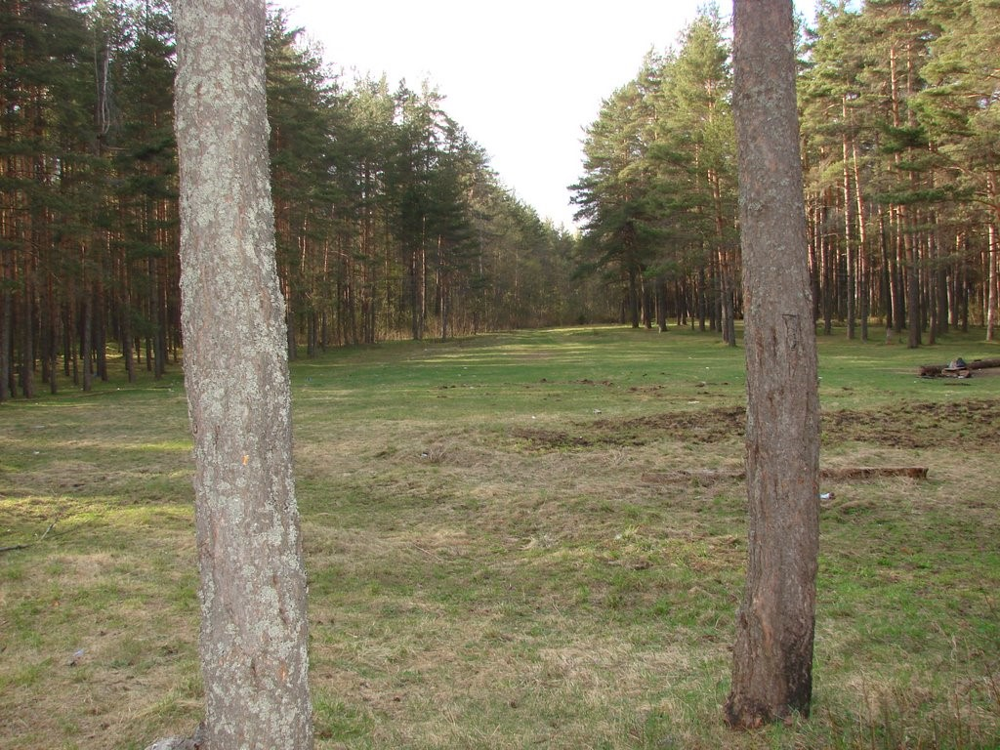
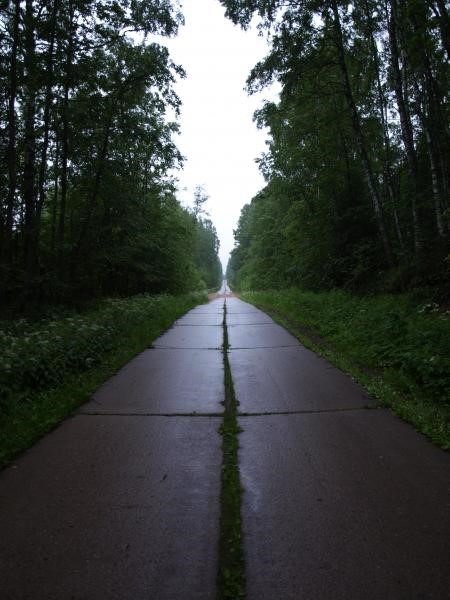

ЗАТО Озёрный
Природа
Лес в ЗАТО «Озерный»

Среди великолепной природы, нетронутой цивилизацией, между двумя столицами – Москвой и Санкт-Петербургом, окружённый бескрайними лесами и многочисленными озёрами, расположился современный городок Озёрный. Первые упоминания о городке, представлявшем собой воинскую часть технического обслуживания авиации, относятся к 30-м годам прошлого века.
Аллея
